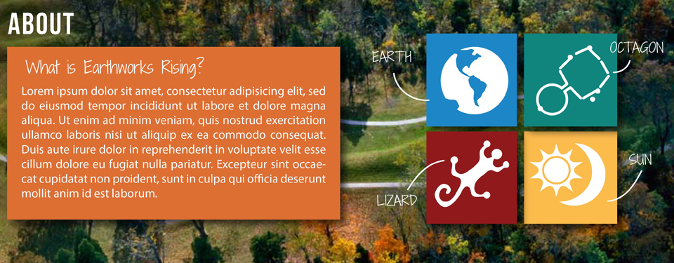

The Digital Media and Learning Competition is supported by grants from the John D. and Catherine T. MacArthur Foundation and the Bill and Melinda Gates Foundation to the University of California, in collaboration with Duke University and the Mozilla Foundation. The University of California Humanities Research Institute and Duke University's John Hope Franklin Humanities Institute are the principal administrating bodies for this grant on behalf of HASTAC.
@2013 Earthworks Rising, All rights reserved.